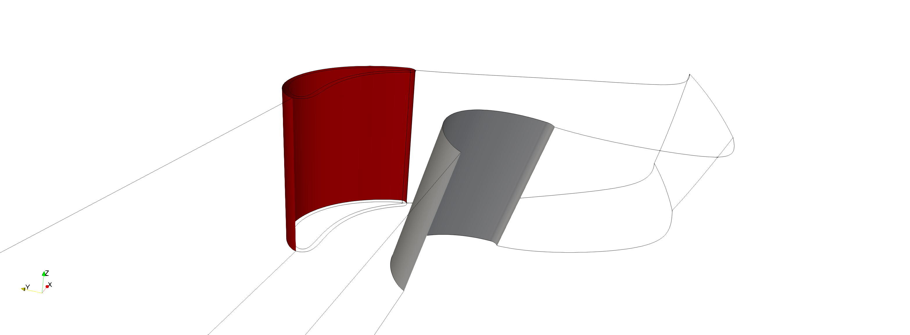
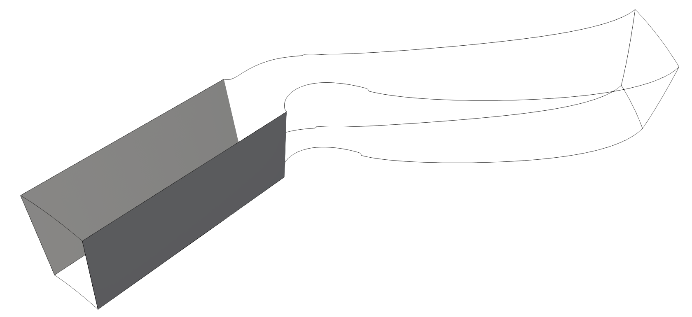
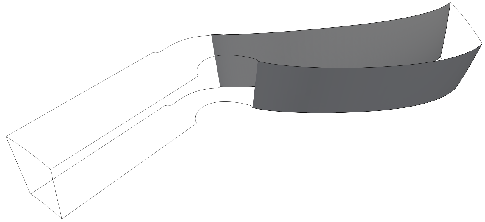

Periodicity
Periodicity is when you rotate a mesh sector about an axis and one side lines up with the other – like a slice of pie that tiles into a full circle. Plot3D library can find periodic surfaces using rotated_periodicity. It detects which outer faces match after rotation by a given angle about any axis (x, y, or z).
- The function automatically:
Reduces the mesh by GCD for faster matching
Detects angular boundary faces to narrow the search space
Applies geometric pre-checks to reject non-matching pairs cheaply
Tries both +angle and -angle rotations for robustness
The matching algorithm has multiple phases:
Phase 2 – Main greedy loop with centroid precheck. Each unmatched face is tested against rotated candidates. Partial matches produce split faces that re-enter the pool. Runs until convergence with no iteration limit.
Phase 3 – Relaxed matching without centroid precheck. Uses 5x tolerance (5e-6) to catch wavy-surface faces rejected by the centroid filter. Also runs until convergence with no iteration limit (earlier versions had a hardcoded limit of 50 iterations which was insufficient for large meshes needing 100+ iterations).
You can optionally filter by periodic_direction (‘i’, ‘j’, or ‘k’) to only check faces on a constant index plane.
In this example we will use the file PahtCascade-ASCII
1from plot3d import write_plot3D, read_plot3D, rotated_periodicity, connectivity_fast
2
3blocks = read_plot3D('PahtCascade-ASCII.xyz', binary = False)
4face_matches, outer_faces = connectivity_fast(blocks)
5periodic_surfaces, outer_faces_to_keep, periodic_faces, outer_faces = rotated_periodicity(
6 blocks, face_matches, outer_faces,
7 nblades=55, rotation_axis='x', periodic_direction='k')
8# Append periodic surfaces to face_matches
9face_matches.extend(periodic_surfaces)
{kind=link}

{kind=link}

{kind=link}
